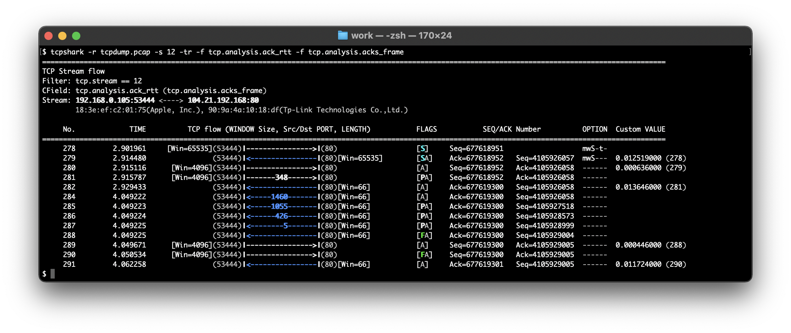
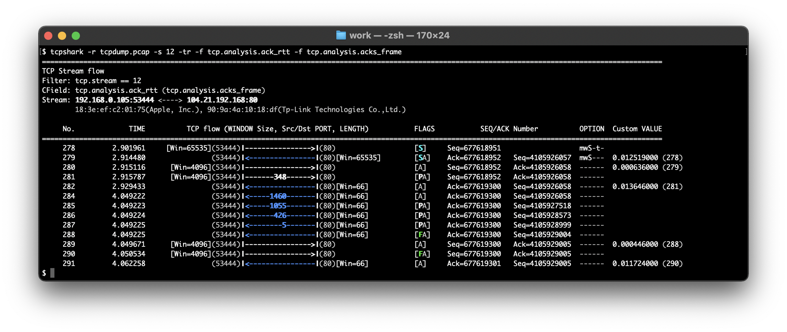
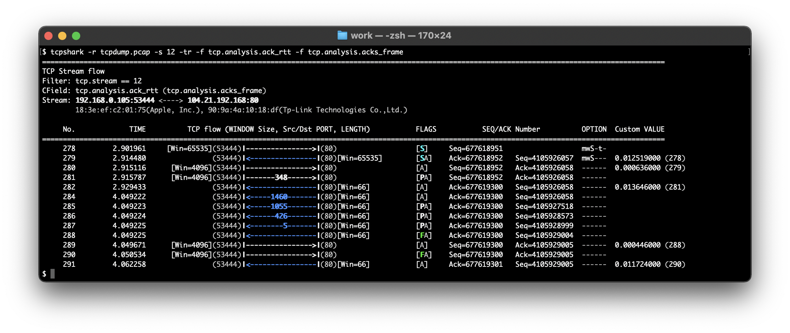

TcpShark
TCP の解析に特化したパケットアナライザです。

説明を隠す
TcpShark は、Wireshark を解析エンジンとした CLI ツールです。


 

説明を隠す
ネットワークのトラブルシューティングでは、パケット解析による調査が不可欠です。ただし、Wireshark を使用したとしても、大容量かつ複雑化する TCP ストリームの解析には職人的なスキルと経験を必要とするでしょう。
このツールで TCP ストリームのパケットフローをグラフィカルに表示することにより、誰でもエンドツーエンドのデータの流れを容易に把握することができます。
Wireshark を補完するツールとして、TcpShark はあなたのトラブルシューティングの手助けになるでしょう。
特長
- 独自フォーマット データサイズ、ウィンドウサイズ、SEQ/ACK 番号を整然と表示することで、TCP ヘッダの各フィールドの推移・変化を読み取りやすくなります。
- 直感的なデザイン パケット方向、TCP フラグ（SYN、RST など）、Analysis 情報（パケロス、再送 など）を色分けして表示することで、大容量のキャプチャデータにおいても異常に気付きやすくなります。
- カスタマイズ可能 Wireshark がサポートする各種プロトコルフィールド（HTTPリクエストURI、HTTPステータスコード など）を追加表示することで、TCP 以外のプロトコル情報と関連付けて解析できます。
導入方法
- /usr/local/bin に実行ファイルをダウンロード
- ファイルに実行権を付与
- (任意) .bash_profile や .zprofile に環境変数 TCPSHARK_APPEARANCE を設定 例：端末画面が黒色の場合
- (Cygwin のみ) .bash_profile や .zprofile に環境変数 TCPSHARK_TSHARK_COMMAND を設定 例：C:¥Program Files 配下に Wireshark をインストールしている場合
$ wget https://raw.githubusercontent.com/manabapp/TcpShark/main/tcpshark または $ curl -o tcpshark https://raw.githubusercontent.com/manabapp/TcpShark/main/tcpshark
$ chmod 0755 tcpshark
export TCPSHARK_APPEARANCE=Dark
export TCPSHARK_TSHARK_COMMAND="/cygdrive/c/Program Files/Wireshark/tshark.exe"
使用例
- list mode キャプチャデータに含まれる TCP ストリームを一覧表示します。
- flow mode 指定した識別子（list mode の Index）の TCP ストリームをフロー表示します。
- one mode 指定したフレーム番号（flow mode の No.）の TCP パケットを詳細表示します。
- Analysis 情報 Wireshark が検出可能な TCP Analysis 情報（パケロス、重複 ACK など）を色分けして表示します。
- カスタムフィールド 任意のフィールド（例：TCP RTT）を付加して表示します。



TcpShark は、Linux/Solaris/macOS/Windows のターミナル上で動作します。
© 2022 manabapp.
English | 日本語
English | 日本語